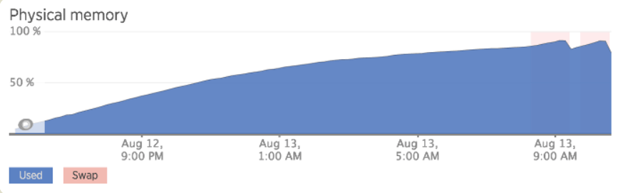

说说 JavaScript 中内存泄漏有哪几种情况？
参考答案
一、是什么
内存泄漏（Memory leak）是在计算机科学中，由于疏忽或错误造成程序未能释放已经不再使用的内存
并非指内存在物理上的消失，而是应用程序分配某段内存后，由于设计错误，导致在释放该段内存之前就失去了对该段内存的控制，从而造成了内存的浪费
程序的运行需要内存。只要程序提出要求，操作系统或者运行时就必须供给内存
对于持续运行的服务进程，必须及时释放不再用到的内存。否则，内存占用越来越高，轻则影响系统性能，重则导致进程崩溃

在C语言中，因为是手动管理内存，内存泄露是经常出现的事情。
char * buffer;
buffer = (char*) malloc(42);
// Do something with buffer
free(buffer);上面是 C 语言代码，malloc方法用来申请内存，使用完毕之后，必须自己用free方法释放内存。
这很麻烦，所以大多数语言提供自动内存管理，减轻程序员的负担，这被称为"垃圾回收机制"
二、垃圾回收机制
Javascript 具有自动垃圾回收机制（GC：Garbage Collecation），也就是说，执行环境会负责管理代码执行过程中使用的内存
原理：垃圾收集器会定期（周期性）找出那些不在继续使用的变量，然后释放其内存
通常情况下有两种实现方式：
- 标记清除
- 引用计数
标记清除
JavaScript最常用的垃圾收回机制
当变量进入执行环境是，就标记这个变量为“进入环境“。进入环境的变量所占用的内存就不能释放，当变量离开环境时，则将其标记为“离开环境“
垃圾回收程序运行的时候，会标记内存中存储的所有变量。然后，它会将所有在上下文中的变量，以及被在上下文中的变量引用的变量的标记去掉
在此之后再被加上标记的变量就是待删除的了，原因是任何在上下文中的变量都访问不到它们了
随后垃圾回收程序做一次内存清理，销毁带标记的所有值并收回它们的内存
举个例子：
var m = 0,n = 19 // 把 m,n,add() 标记为进入环境。
add(m, n) // 把 a, b, c标记为进入环境。
console.log(n) // a,b,c标记为离开环境，等待垃圾回收。
function add(a, b) {
a++
var c = a + b
return c
}引用计数
语言引擎有一张"引用表"，保存了内存里面所有的资源（通常是各种值）的引用次数。如果一个值的引用次数是0，就表示这个值不再用到了，因此可以将这块内存释放
如果一个值不再需要了，引用数却不为0，垃圾回收机制无法释放这块内存，从而导致内存泄漏
const arr = [1, 2, 3, 4];
console.log('hello world');面代码中，数组[1, 2, 3, 4]是一个值，会占用内存。变量arr是仅有的对这个值的引用，因此引用次数为1。尽管后面的代码没有用到arr，它还是会持续占用内存
如果需要这块内存被垃圾回收机制释放，只需要设置如下：
arr = null通过设置arr为null，就解除了对数组[1,2,3,4]的引用，引用次数变为 0，就被垃圾回收了
小结
有了垃圾回收机制，不代表不用关注内存泄露。那些很占空间的值，一旦不再用到，需要检查是否还存在对它们的引用。如果是的话，就必须手动解除引用
三、常见内存泄露情况
意外的全局变量
function foo(arg) {
bar = "this is a hidden global variable";
}另一种意外的全局变量可能由 this 创建：
function foo() {
this.variable = "potential accidental global";
}
// foo 调用自己，this 指向了全局对象（window）
foo();上述使用严格模式，可以避免意外的全局变量
定时器也常会造成内存泄露
var someResource = getData();
setInterval(function() {
var node = document.getElementById('Node');
if(node) {
// 处理 node 和 someResource
node.innerHTML = JSON.stringify(someResource));
}
}, 1000);如果id为Node的元素从DOM中移除，该定时器仍会存在，同时，因为回调函数中包含对someResource的引用，定时器外面的someResource也不会被释放
包括我们之前所说的闭包，维持函数内局部变量，使其得不到释放
function bindEvent() {
var obj = document.createElement('XXX');
var unused = function () {
console.log(obj, '闭包内引用obj obj不会被释放');
};
obj = null; // 解决方法
}没有清理对DOM元素的引用同样造成内存泄露
const refA = document.getElementById('refA');
document.body.removeChild(refA); // dom删除了
console.log(refA, 'refA'); // 但是还存在引用能console出整个div 没有被回收
refA = null;
console.log(refA, 'refA'); // 解除引用包括使用事件监听addEventListener监听的时候，在不监听的情况下使用removeEventListener取消对事件监听
- 全局变量：无意中创建的全局变量可能不会被垃圾回收机制回收。
- 未清理的定时器：
setInterval或setTimeout未被清除。 - 闭包引用：闭包可能持续引用外部变量，阻止它们被回收。
- 未断开的DOM引用：即使DOM元素被移除，引用未被清除。
- 事件监听器未移除：事件监听器未在元素移除时一并移除。
- 循环引用：在某些情况下，循环引用可能阻止垃圾回收。
- 第三方库：不恰当使用第三方库可能导致内存泄漏。
- 缓存数据未清理：长时间存储的数据未及时清理。
解决方法
- 清理不再使用的全局变量和定时器。
- 移除不再需要的事件监听器。
- 避免不必要的闭包引用。
- 使用内存分析工具检测潜在的内存泄漏。
- 谨慎使用第三方库，确保及时清理资源。